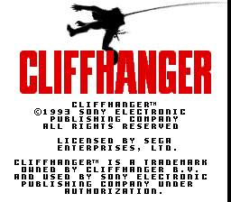
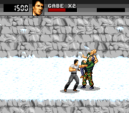
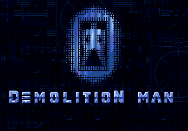
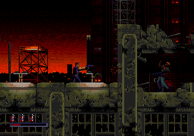
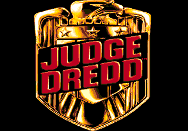
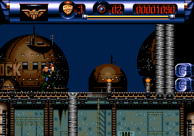
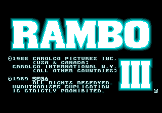
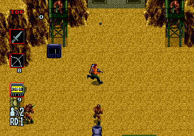

Mega Drive - Os jogos baseados em filmes do Stallone
 :::. Por B-Mark
:::. Por B-Mark
Sylvester Stallone nasceu em 06 de Julho de 1946, em Nova Iorque, e
tornou-se famoso nos anos 80 por viver o boxeador Rocky Balboa e o
soldado John Rambo, além de trabalhar como roteirista e diretor de seus
proprios filmes. Esse artigo mostra os jogos que foram baseados
nos filmes estrelados pelo ator para o 16 bits da Sega. Entre
parenteses esta o titulo que cada filme recebeu no Brasil.
Cliffhanger (Risco Total)

Fabricante - Sony Imagesoft
Ano - 1993
Cliffhanger,
produzido em 1993, traz Stallone como Gabe Walker, um alpinista que
acaba se envolvendo em uma luta contra bandidos que perderam o dinheiro
de um assalto nas regiões montanhosas onde Walker trabalha.
O
jogo é um beat 'em up genérico e na minha opinião nada atraente se
comparado a outros clássicos do gênero, como a trilogia Streets of Rage
para o Mega Drive. Tem a limitação de aparecer somente 2 inimigos de cada vez na
tela ao invés de um grupo maior de inimigos, o que tambem lembra um pouco
os beat 'em ups dos consoles de 8 bits.
Demolition Man (O Demolidor)

Fabricante - Acclaim
Ano - 1995
Em Demolition Man, produzido em 1993, Stallone interpreta John Spartan,
o policial mais truculento de Los Angeles que tem o apelido de
Demolition Man, pelo fato de ocorrer destruições onde ele
marcou presença em sua caçada ao criminoso Simon Phoenix,
que é interpretado por Wesley Snipes. A trama ocorre
em 1996 numa LA tomada pela violência e pelo caos. Durante
um resgate, devido a morte de varios reféns que eram mantidos
por Phoenix, o policial foi condenado a crioprisão e ficou
congelado por mais de 30 anos.
O jogo foi lançado em 1995, 2 anos após a
produção do filme e ele mescla fases de
ação side scrooling com shooting de visão aerea
como em Rambo III. Curiosamente esse jogo tem uma fase em que Spartan
luta contra um robo inexistente no filme original.
Judge Dreed - The Movie (O Juiz)

Fabricante - Acclaim
Ano - 1995
Filme
baseado na historia em quadrinhos de mesmo nome, foi muito criticada
pelos fãs do personagem. Stallone interpreta Dreed, o
protagonista da historia que curiosamente tira o capacete após os
trabalhos enquanto que no original o personagem passa o tempo todo de
capacete sem mostrar sua face.
A historia se passa em um futuro
dominado pela violência em que os Juizes (oficiais que une as funções de
Juiz, Juri e Executor) são a principal força policial para combater os
criminosos. Jogo de ação side scrooling na minha opinião mediano.
Rambo III

Fabricante - Sega
Ano - 1989
Rambo III foi produzido em 1988 e traz Stallone vivendo um de seus mais
conhecidos personagens. O veterano de guerra desta vez deve salvar seu
amigo Coronel Tarutman, que foi capturado pelo exercito
soviético que ocupou o Afeganistão. Um dos primeiros
jogos do Mega Drive e que lembra o Ikari Warriors da SNK, em que o
herói enfrenta inimigos em um shooting de visão
aérea além de fases de terceira pessoa em que o
herói deve destruir com flechas veiculos inimigos como tanques e
helicopteros. Curiosamente a Sega tambem produziu um Rambo III para
Master System em que a pistola Light Phaser é usada.
Acesse o Trombone e comente sobre essa matéria!